テンプレートのレイアウト構成
ホームページのレイアウトには、「右サイドバー」や「左サイドバー」、あるいは「ワンカラム」などがあります。いずれの場合でも、HTMLソース上は「サイドバー」よりも「コンテンツ」が上になるように設定することをおすすめします。
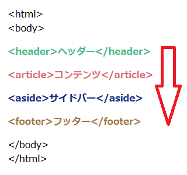
もし、サイドバーのメニュー部分をコンテンツよりも上部に設定してしまった場合、レスポンシブウェブデザインでスマホに最適化する際に、コンテンツ部分が表示されるまでスクロールすることになってしまいます。
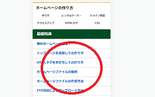
そのため、HTMLソース上、コンテンツ部分を上部に設定し、サイトにアクセスした際にメインコンテンツがすぐに表示されるようにしましょう。
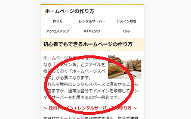
その上で、PCサイト用にはcssにfloatを設定して、サイドバーなどを回り込ませることをおすすめします。
右サイドバーと左サイドバーの作り方
一般的なPCサイトのテンプレートレイアウトは右サイドバーがおすすめです。
この場合、コンテンツ部分に「float:left;」を設定することで対応することができます。
■右サイドバーの例
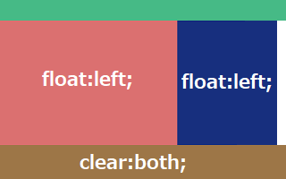
右サイトバーについては、「float:left;」なら左寄せ、「float:right;」なら右寄せになりますが、全体のwidth幅と合致させて隙間の出ないようにぴったり設定しておけば、どちらでも違いはありません。
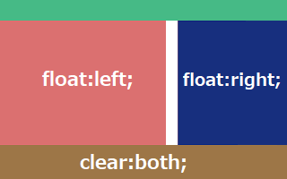
一方、左サイドバーにする際はコンテンツ部分に「float:right;」を設定しておくとよいでしょう。
■左サイドバーの例
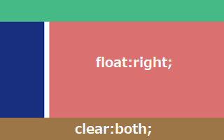
この場合、サイドバー部分に何も設定しなくても左に寄りますが、「float:left;」などと設定しておくことをおすすめします。ただし、割合的に左サイドバーで作成しているサイトはそれほど多くはないかもしれません。
また、最近ではfloatを何も設定せず、ワンカラムのレイアウトも多くなってきました。
■ワンカラムの例
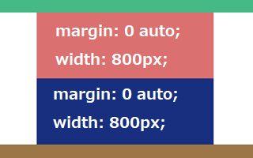
コンテンツ部分やサイドバー部分に「margin: 0 auto;」を設定することでセンタリングされますが、width幅を広くとりすぎると１行の文字数が多くなり、読みにくくなってしまうため、800px～900px程度に設定しておくのが無難です。
テンプレートのwidth幅の取り方
ホームページのレイアウトを決める際、横幅のwidth幅はデバイスの解像度のシェアに応じて決めることをおすすめします。
シェアを調べる際はこちらのサイトが便利です。
StatCounter Global Stats
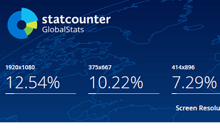
現在、主流の解像度は「1920 × 1080」となっているため、パソコンの解像度を変更して実際の表示を確認されてみるとよいでしょう。
この「1920 × 1080」を100％でそのまま使っている人が多いと思いますが、なかには125％や150％で拡大して使用している人もいます。
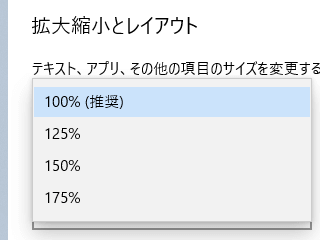
125％の場合は「1920 × 1080」をそれぞれ1.25で割って「1536 × 864」、150％の場合は1.5で割って「1280 × 720」の解像度になりますが、このあたりでも正常に表示されるかをチェックしておくことをおすすめします。
例えば、当サイト運営者の環境は「1536 × 864」ですが、この解像度でヤフーを閲覧した場合は以下のように表示されています。
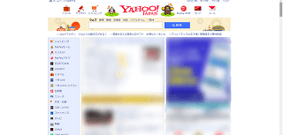
一方、100％の「1920 × 1080」で閲覧した場合、以下のように表示されます。
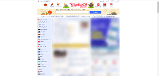
一般的に、ホームページのwidth幅は980～1000px程度のレイアウトが多いですが、1920pxあたりの大きめの解像度で閲覧すると余白が大きくなる傾向があります。そのため、ホームページのwidth幅を広めにとり、1100～1200px程度に設定されることも多くなってきました。
また、広めのレイアウト幅にした場合、フォントサイズも18pxあたりの大きめのサイズにすることをおすすめします。
レスポンシブウェブデザインのメディアクエリでブレイクポイントを設定することで、解像度に応じてレイアウト幅やフォントサイズの調整ができるため、シェアの多い主要な解像度は全てチェックしておくとよいでしょう。
ちなみに、広告の関係からか、サイドバーのwidth幅は300pxで設定されているサイトが多いと感じていますが、コンテンツの部分は650px～800px程度で設定しているケースが多いと思います。Chromeデベロッパーツールを使えば、簡単に確認できるため、大手メディアなどを参考にしながら設定していくことをおすすめします。